Year 2 Fixed Wing UAV Group project
Brief
Working within a 6 person team to design a wing and camera gimbal for a fixed wing UAV , I was individually responsible for the design and manufacture of the articulated gimbal assembly. The dual axis gimbal was to be powered by an Arduino microcontroller, IMU and two servo motors and served to counteract pitch and roll disturbances and maintain a level camera orientation.
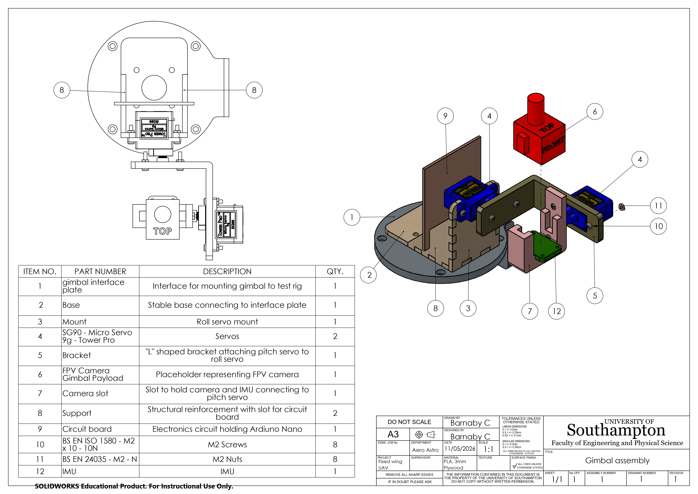
FIG. 1 — SOLIDWORKS drawing of the gimbal assembly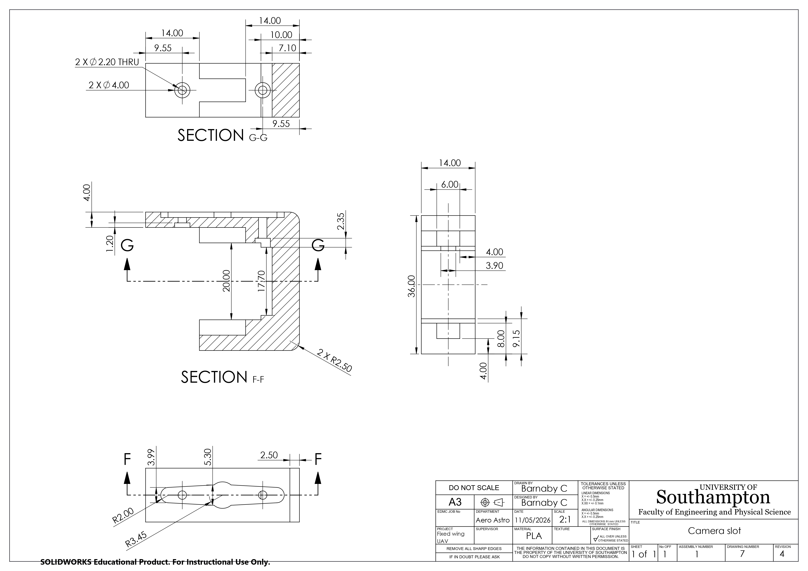
FIG. 1 — SOLIDWORKS drawing of the camera mounting slotDesign and SOLIDWORKS modelling
I modelled a fully parameterised, equation-driven assembly allowing for rapid iteration and testing of design configurations and tolerances without the need to remodel the assembly from scratch.
The assembly was fully constrained and articulated, allowing me to demonstrate and evaluate the full range of motion of the gimbal and any potential collisions before manufacturing.
Arduino programming
I developed an Arduino program to stabilise the gimballed camera by decoding incoming IMU data using the I2C protocol and actuating the dual servo motors.
The IMU
Our IMU was a 6 DOF sensor, providing accelerometer and gyroscope data. I developed a complementary filter to combine the sensor data into a single orientation estimate.
PID Control systems
Live telemetry testing revealed that the initial PID was unreliable: The servos used absolute position commands rather than velocity inputs, so that a proportional gain less than 1 would result in persistent steady-state error. I replaced this with an integral-only controller. A tuned coefficient for each axis (pitch and roll) controlled what percentage of calculated error to be applied to the servo position each iteration. This approach converged quickly, eliminating error and stabilising the gimbal.
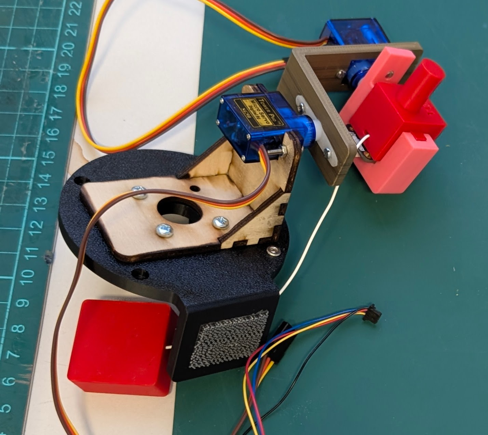
FIG. 2 — Gimbal assemblyManufacture and rapid prototyping
3D printing
From the SOLIDWORKS parts, I 3D printed a series of prototype components in PLA to test the tolerances I had designed. The first iterations revealed fitment issues with the servo motors, which I resolved by adjusting the tolerance parameters in the SOLIDWORKS. My final design was also printed with reduced infill to reduce weight and material usage. I also used variable layer heights to produce a better finish on, and fitment between, curved surfaces, while reducing print time elsewhere.
Laser cutting
I generated SOLIDWORKS drawings and laser cut the flat base components of the gimbal from 3mm plywood. This provided a lightweight, stable and rigid base from which to mount the servo motors and gimbal assembly. Laser cutting was chosen for its speed and accuracy, allowing a much tighter fit on the box joints, and Plywood would save considerable weight over a 3D printed base.
Iteration and testing
Results
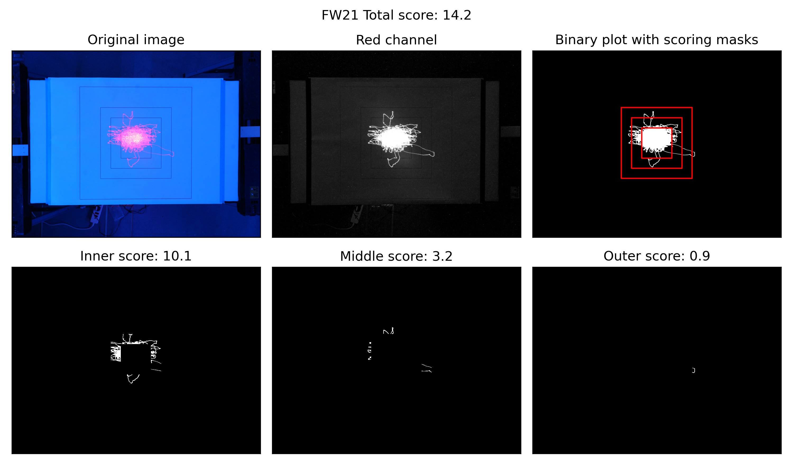
FIG. 2 — Gimbal test resultsReplace this paragraph with a short write-up: the mechanism, actuation and control approach, IMU stabilisation, and what changed across design iterations.
Year 1 Fixed Wing UAV design project
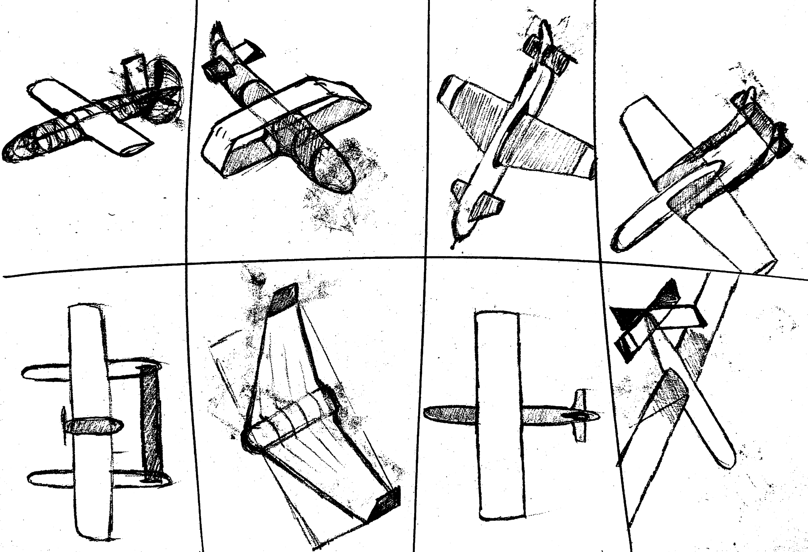
FIG. 3 — UAV initial design sketchesReplace this paragraph with a short write-up: airframe layout, aerodynamic sizing and stability, and results from any flight testing.
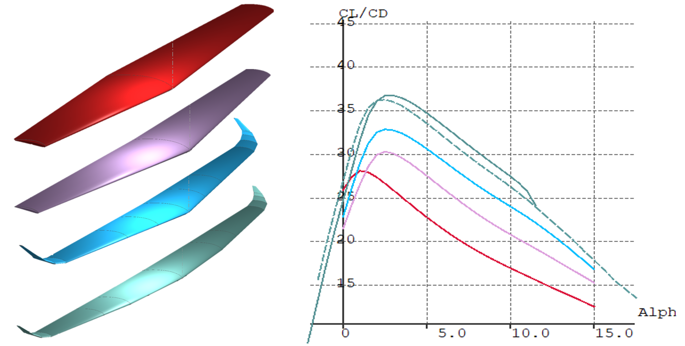
FIG. 4 — XFLR5 wing design iterations with corresponding lift/drag ratiosBalsa Wood Glider Competition
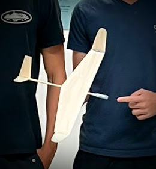
FIG. 5 — Balsa Wood GliderChallenge
The objective of this project was to design and manufacture a glider with stable and consitent flight characteristics, from a limited supply of balsa wood, a small amount of adhesive and some blue tack ballast. The aircraft would be hand-launched and needed to fly straight, consistently and accurately to strike the wall-mounted target.
Optimising aerodynamic efficiency
My team and I developed and glider which maximised the aspect ratio of the main wing within the permitted footprint, resulting in high aerodynamic efficiency.
Iteration and testing for stability
Following iterative testing and refinement we were able to optimise the mass distribution and resulting centre of gravity to acheive stable flight characteristics.
Competition result
The final design proved itelf reliable and ultimately won the competition - outperforming nearly 300 fellow engineering students.
ANSYS Finite Element Analysis
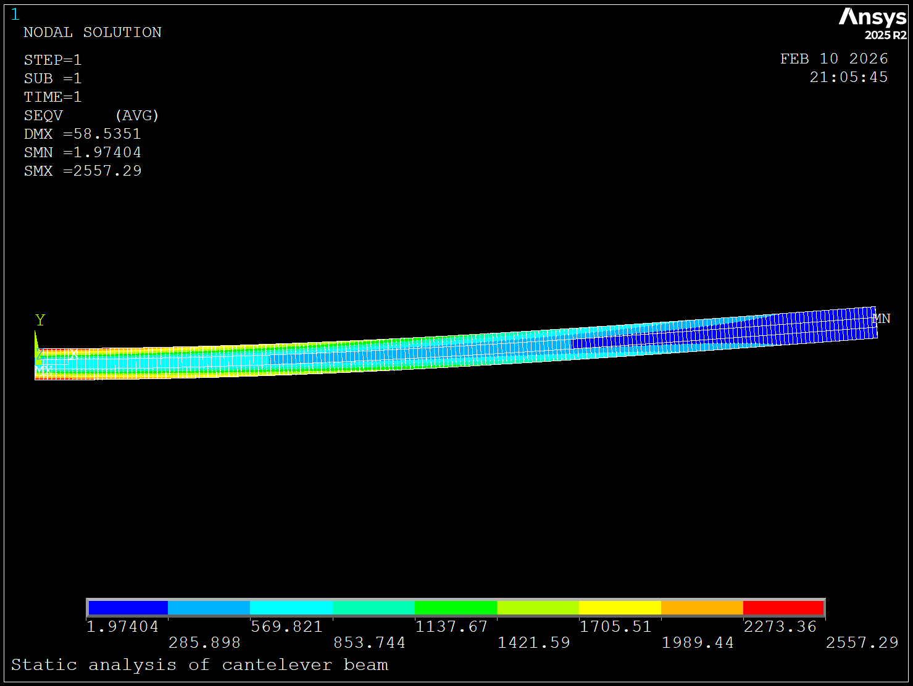
FIG. 6 — ANSYS Finite Element Analysis of a cantilever beam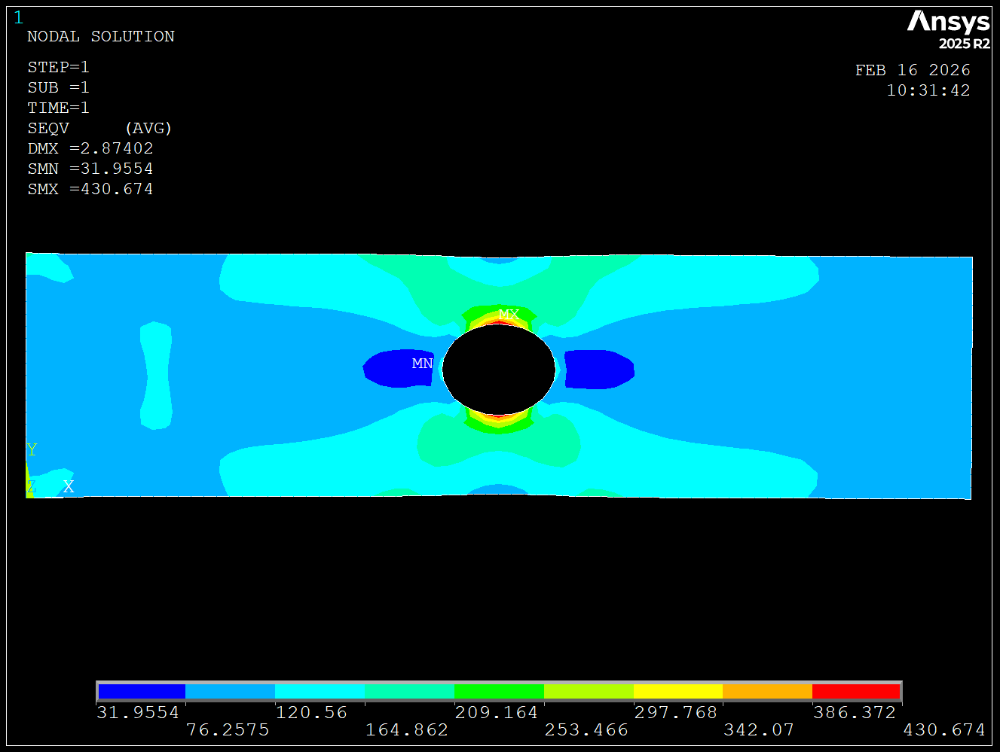
FIG. 7 — ANSYS FEA showing the Von Mises stress distribution of a plate with a holeReplace this paragraph with a short write-up: build constraints, trimming and balance, and the competition result.
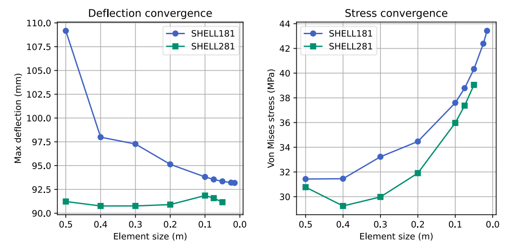
FIG. 8 — ANSYS FEA convergence study on two types different systems of equations for the same plate with a holeANSYS Computational Fluid Dynamics
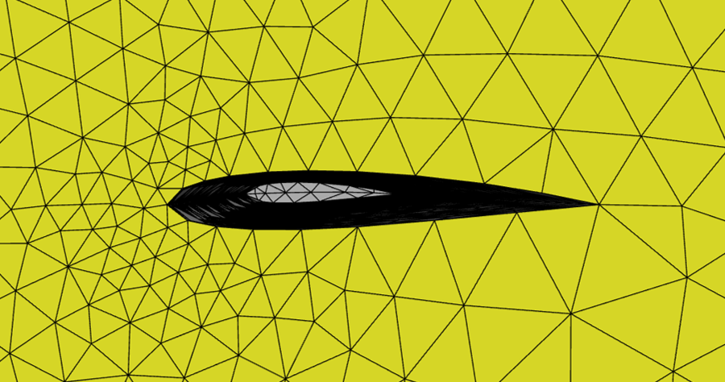
FIG. 7 — Coarse wing meshReplace this paragraph with a short write-up: build constraints, trimming and balance, and the competition result.
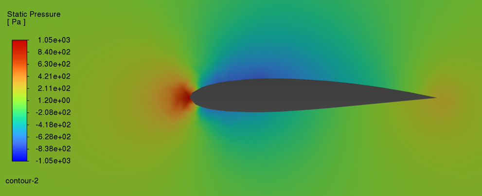
FIG. 8 — ANSYS CFD showing the air pressure around the airfoilReplace this paragraph with a short write-up: build constraints, trimming and balance, and the competition result.
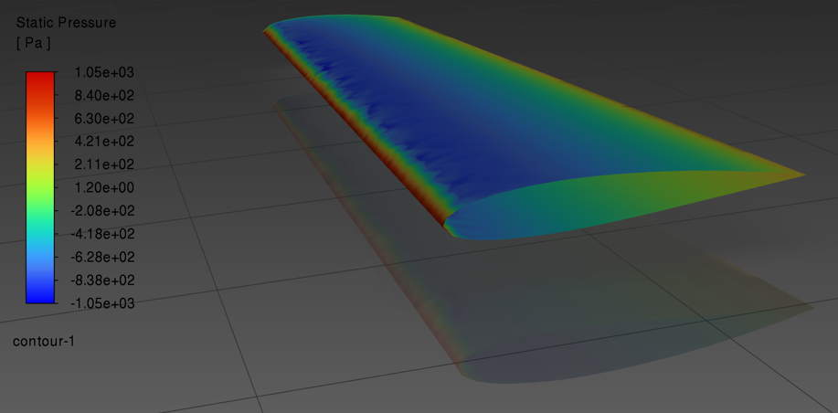
FIG. 9 — ANSYS CFD showing the surface pressure distribution on the wingWind Tunnel Testing
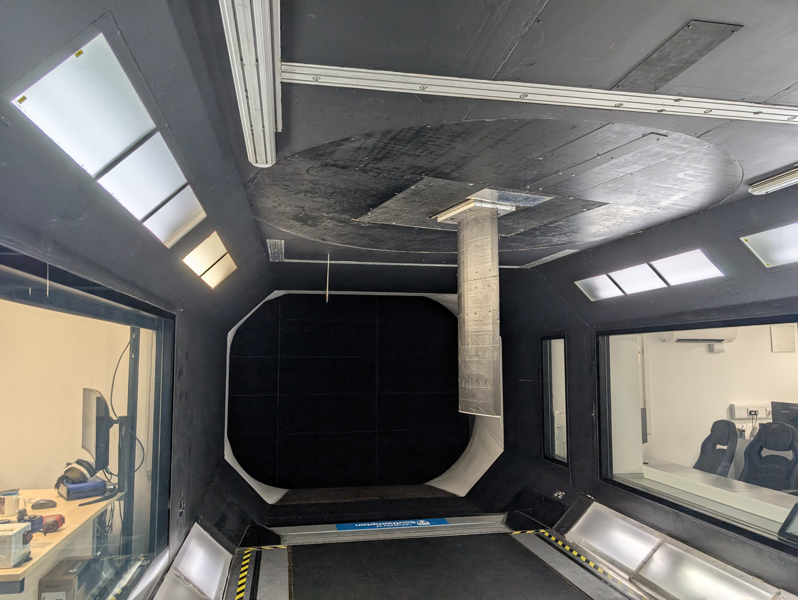
FIG. 9 — Wind tunnel testing of a wing sectionReplace this paragraph with a short write-up: build constraints, trimming and balance, and the competition result.
Mercedes-AMG Petronas Formula One Team work experience week
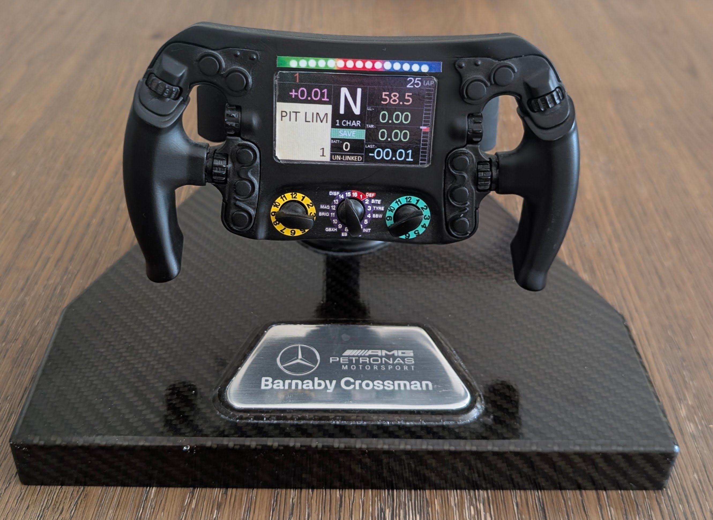
FIG. 10 — Mock F1 steering wheel I produced during my work experience weekReplace this paragraph with a short write-up: build constraints, trimming and balance, and the competition result.